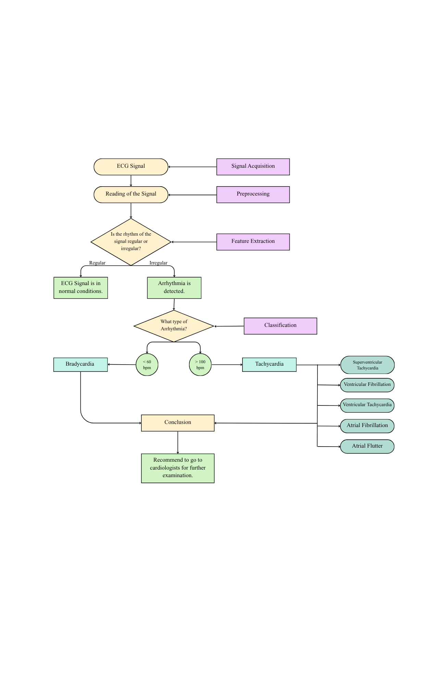

BeatSense
Python-Based Arrhythmia Detection through ECG Signal Processing
Introduction
Cardiovascular diseases remain the leading cause of death worldwide. One of the most common conditions under this category is arrhythmia—an irregular heart rhythm that can lead to complications such as stroke or heart failure. Traditional ECG interpretation relies heavily on manual analysis, which can be time-consuming and prone to human error.
BeatSense is a Python-based software system developed to detect arrhythmias using digital signal processing and machine learning. By filtering noise, identifying R-peaks, and classifying heartbeats, BeatSense aims to provide an automated, accessible, and low-cost solution for ECG analysis.
Problem Statement
Despite the availability of ECG monitoring tools, challenges in accuracy, real-time detection, and accessibility persist. There is a growing need for an automated and reliable arrhythmia detection system that supports early diagnosis and improves clinical outcomes. BeatSense addresses this need by utilizing the MIT-BIH Arrhythmia Database and Python’s signal processing libraries to create a functional, research-based detection tool.
Objectives
- To conduct a comprehensive review of ECG signal processing and arrhythmia detection methods.
- To design and develop an automated ECG signal processing and arrhythmia detection system using Python.
- To analyze and evaluate the performance of the developed system in terms of accuracy and efficiency.
Methodology
- Data Acquisition: Collect ECG recordings from the MIT-BIH Arrhythmia Database, containing annotated patient ECG signals.
- Preprocessing: Apply digital filters to remove noise and segment the ECG signals into analyzable sections.
- Feature Extraction: Identify R-peaks, compute RR intervals, and extract waveform characteristics representing heart rhythm.
- Classification: Use machine learning algorithms (SVM, Random Forest, or CNN) to classify heartbeats as normal or arrhythmic.
- Implementation: Develop the BeatSense program in Python using libraries such as NumPy, SciPy, Matplotlib, Scikit-learn, and TensorFlow.
The flowchart below illustrates the proposed system workflow for BeatSense.
Results & Performance
The chart below presents BeatSense’s performance metrics using the MIT-BIH Arrhythmia dataset.
üìÑ Download Full Research ReportEthical Considerations
This study utilizes the publicly available MIT-BIH Arrhythmia Database, ensuring no direct human subject participation or identifiable patient data. All datasets are used strictly for academic and instructional purposes. Proper citations and data source acknowledgments are maintained throughout the project.
Limitations
The BeatSense project is limited to ECG data from the MIT-BIH Arrhythmia Database. It focuses on detecting and classifying arrhythmias such as bradycardia and tachycardia. Real-time ECG capture and clinical deployment are beyond the current scope. Accuracy may vary depending on the quality of input signals.
Research Team
- Shena Marie Espelita
- Jashley Mae Alcances
- Ylona Leigh Balahadia
- Mhekyla D. Ramirez
Adviser: Dr. Abid Yaya
Institution: Batangas State University – Department of Biomedical Engineering
Contact
üìß Email: beatsense.project@gmail.com
üåê GitHub Repository: https://github.com/